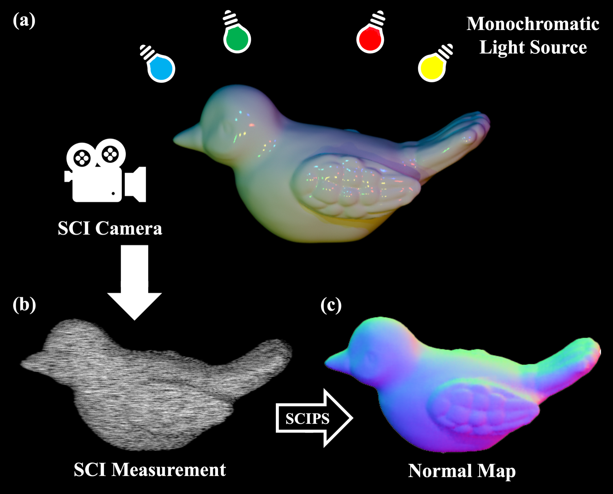
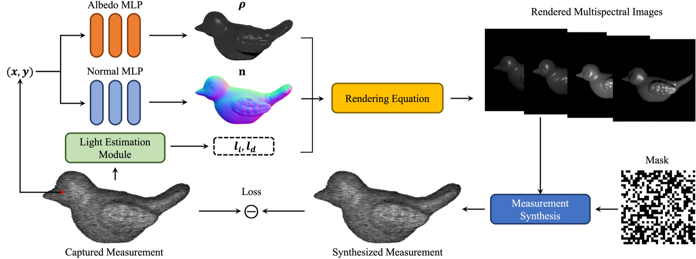
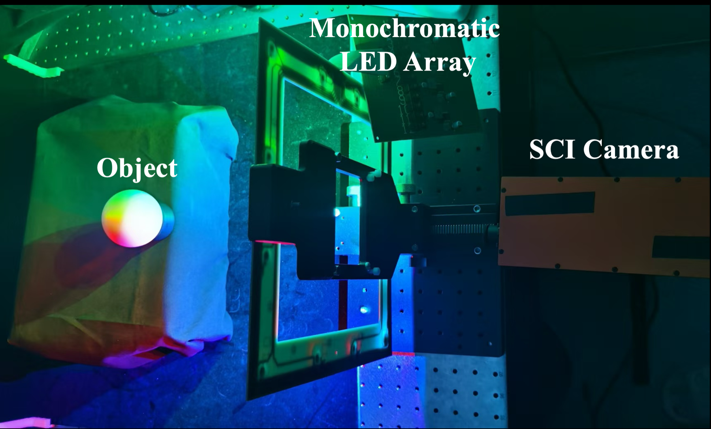
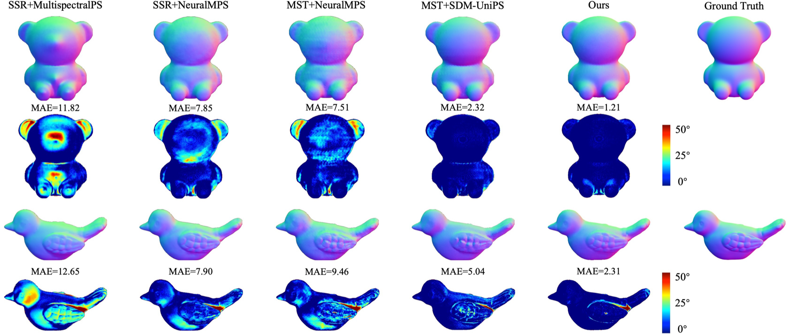
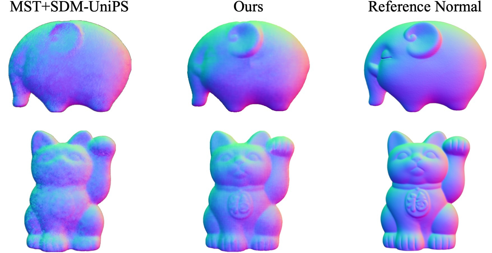

SCIPS: Single-Shot Photometric Stereo from a
Snapshot Compressed Multispectral Image
Una exposición, una medición 2D, un mapa de normales
Yunhao Li · Yanan Hu · Xiaodong Wang · Yuze Yang · Ziyi Meng · Xin Yuan · Peidong Liu
Zhejiang University · Westlake University · ICIP 2026
Presentación de paper — Francisco Alfaro Medina
Doctorado en Ingeniería Electrónica · Universidad Técnica Federico Santa María
La promesa y el precio del estéreo fotométrico
- El estéreo fotométrico (Woodham, 1980) recupera normales de superficie a partir de imágenes bajo iluminación variable — sigue siendo el estándar de oro para el detalle geométrico fino.
- El costo: una imagen por cada fuente de luz, capturadas de forma secuencial.
- Adquisición lenta, mucho almacenamiento, nada de sujetos en movimiento.
- SCIPS hace una pregunta directa: ¿se puede lograr con una sola exposición de 10–20 ms y un único cuadro 2D?

El problema
Todo camino hacia el PS de una captura tiene un cuello de botella
Tres caminos, tres cuellos de botella
| Enfoque | Cómo separa las luces | Cuello de botella |
|---|---|---|
| PS convencional [1,2] | Tiempo — una luz blanca por cuadro | Captura secuencial: lenta y costosa en almacenamiento |
| PS multiespectral RGB [3,4] | Longitud de onda — 3 canales del sensor | Solo ~3 fuentes de luz efectivas; los filtros de color o las luces alternadas reintroducen la captura secuencial |
| PS hiperespectral | Longitud de onda — muchos canales | Las cámaras hiperespectrales son caras y poco prácticas de desplegar |
La brecha. El multiplexado espectral es la idea correcta — codificar la dirección de iluminación en la longitud de onda y encender todas las luces a la vez — pero un sensor RGB estándar no tiene canales suficientes, y una cámara hiperespectral no es una respuesta práctica.
Imagen compresiva de una captura (SCI): el modelo directo
Un cubo multiespectral \(I \in \mathbb{R}^{H \times W \times N_\lambda}\) es codificado, cizallado y colapsado sobre un único sensor 2D:
\[I' = I \odot M\] \[I''(x, y, n_\lambda) = I'\big(x + d(\lambda_{n_\lambda} - \lambda_c),\, y,\, n_\lambda\big)\] \[Y = \sum_{n_\lambda=1}^{N_\lambda} I''(:,:,n_\lambda) + Z\]
\(M\): máscara de apertura codificada · \(d\): paso de dispersión · \(Z\): ruido del sensor · \(Y\): el único cuadro capturado
- Con \(d = 1\), la medición es \(\dfrac{W \cdot N_\lambda}{W + N_\lambda - 1}\) veces más eficiente en memoria que el cubo.
- Para \(W = 1024\), \(N_\lambda = 12\): ≈ 11,9× de compresión, sobre un sensor CMOS estándar.
- El precio: recuperar \(I\) a partir de \(Y\) es un problema severamente mal planteado.
Por qué falla el pipeline obvio
Línea base en dos etapas
medición SCI
↓ reconstrucción SCI (MST, SSR)
cubo multiespectral
↓ estéreo fotométrico (SDM-UniPS, NeuralMPS, MultispectralPS)
mapa de normales
- Los errores de la etapa 1 se propagan y se acumulan en la etapa 2.
- Ambas etapas son redes preentrenadas → generalización limitada, sobre todo hacia datos SCI reales.
- La etapa 1 optimiza un objetivo espectral, ciego a la tarea geométrica que viene después.
SCIPS: una sola etapa
medición SCI
↓ renderizado inverso neuronal con el modelo SCI dentro del lazo
normales + albedo + iluminación
- El cubo nunca se reconstruye: es una cantidad intermedia dentro de un renderizador diferenciable.
- Optimización por escena en tiempo de inferencia → sin brecha de dominio entre entrenamiento y test.
- Un solo objetivo: consistencia fotométrica con la medición efectivamente capturada.
El método
Meter la física de la cámara dentro de la optimización
SCIPS en tres ideas
1 · Renderizado inverso neuronal
Dos MLP mapean coordenadas de píxel \((x,y)\) a la normal de superficie \(n\) y al albedo difuso y especular \(\rho_d, \rho_s\).
Sin predicción feed-forward: la representación de la escena se optimiza por objeto, y eso es lo que la hace robusta entre escenas.
2 · Formación SCI explícita
El cubo renderizado se hace pasar por el modelo real de máscara y cizalle de las Ec. (1)–(3) para sintetizar una medición.
Como ese modelo es diferenciable, la pérdida se calcula donde realmente viven los datos: en el espacio de medición.
3 · Iluminación no calibrada
Un módulo CNN de estimación de luz inicializa \(l_i, l_d\) y se ajusta de forma conjunta con la geometría.
Sin paso de calibración lumínica ni direcciones de luz conocidas — un requisito práctico para un montaje desplegable.
Las tres están gobernadas por una única pérdida fotométrica contra un solo cuadro capturado. En todo el pipeline no hay supervisión con normales de referencia.
El framework, de punta a punta

Rendering: de coordenadas a imágenes espectrales
Cámara ortográfica, dirección de vista fija en \(v = [0,0,1]^{\top}\). Cada canal espectral ve el objeto bajo una luz direccional:
\[\hat{I} = l_i\,\rho(n, l_d)\,\max(n^{\top} l_d, 0)\]
La BRDF se separa en componente difusa y especular, \(\rho(n, l_d) = \rho_d + \rho_s(n, l_d)\) — de modo que el modelo no queda restringido a superficies lambertianas:
\[\hat{I} = l_i\big(\rho_d + \rho_s(n, l_d)\big)\max(n^{\top} l_d, 0)\]
Los dos MLP sobre coordenadas
\[n = \mathrm{MLP}_{\text{normal}}(x, y)\] \[\{\rho_d, \rho_s\} = \mathrm{MLP}_{\text{albedo}}(x, y)\]
- 8 capas totalmente conectadas, 256 canales cada una
- El MLP de albedo agrega una cabeza de predicción de 128 canales
- Las entradas llevan codificación posicional — eso es lo que permite a una red sobre coordenadas representar detalle superficial de alta frecuencia
- Módulo de luz adaptado de Li & Li [20]
Cerrando el lazo: la pérdida fotométrica
\[\mathcal{L}_{\text{photo}} = \Big| \; Y - \sum_{n_\lambda=1}^{N_\lambda} T_{d(\lambda_{n_\lambda} - \lambda_c)}\big(\hat{I} \odot M\big)(:,:,n_\lambda) \; \Big|\]
Qué dice la ecuación
- Renderizar el cubo \(\hat{I}\), modularlo con la máscara real \(M\), cizallarlo con \(T\) y sumar sobre la longitud de onda.
- Comparar contra el único cuadro capturado \(Y\).
- Una sola pérdida escalar actualiza conjuntamente \(n\), \(\rho_d\), \(\rho_s\), \(l_i\) y \(l_d\).
Cuánto cuesta
- Adam, tasa de aprendizaje inicial \(5 \times 10^{-4}\)
- 10K–20K iteraciones, una sola NVIDIA RTX 4090
- 10–15 minutos por objeto (dataset sintético)
- Tiempo de captura: una sola exposición de 10–20 ms
La optimización en tiempo de inferencia suele ser una desventaja. Acá es justamente el punto: el modelo se ajusta a esta medición de esta cámara, así que no hay brecha de dominio entre los datos de entrenamiento y el montaje SCI real.
La evidencia
Benchmarks sintéticos y un prototipo real
Datasets: sintético y un prototipo físico

Sintético — renderizado en Blender
- 10 objetos: Ball, Bear, Bird, Bunny, Cat, Cabbage, Fish, Moai, Pot, Pumpkin
- \(N_\lambda\) = 12 canales, resolución \(612 \times 512\)
- Blender solo renderiza RGB, así que cada luz monocromática se renderiza por separado y se promedia por banda
Real — un sistema SCI-MPS construido para esto
- Apertura codificada + dispersor óptico + sistema de lentes + CMOS
- 12 LED de banda angosta, 460–665 nm, resolución \(1024 \times 1024\)
- Geometría escaneada con un Shining3D EinScan Pro 2X Plus V2
Limitación del dataset real
La ausencia de marcadores de calibración y la adquisición por separado implican que los datos reales no tienen ground truth alineado a nivel de píxel — los resultados reales son solo cualitativos.
Resultados cuantitativos — error angular medio en grados (menor es mejor)
| Método | Ball | Bunny | Fish | Moai | Pumpkin | Promedio |
|---|---|---|---|---|---|---|
| MST [6] + MultispectralPS [4] | 2.40 | 13.76 | 18.40 | 16.45 | 9.41 | 11.63 |
| MST [6] + NeuralMPS [3] | 9.82 | 14.53 | 15.82 | 7.85 | 5.51 | 10.62 |
| MST [6] + SDM-UniPS [18] | 2.42 | 7.18 | 12.81 | 5.30 | 13.35 | 7.60 |
| SSR [7] + MultispectralPS [4] | 2.21 | 13.64 | 18.16 | 17.18 | 9.98 | 11.81 |
| SSR [7] + NeuralMPS [3] | 9.98 | 11.89 | 14.20 | 10.48 | 5.08 | 10.73 |
| SSR [7] + SDM-UniPS [18] | 2.57 | 6.97 | 13.70 | 6.18 | 12.99 | 7.90 |
| SCIPS (propuesto) | 0.55 | 4.96 | 9.73 | 2.54 | 1.12 | 4.39 |
4,39° MAE promedio sobre los 10 objetos
−42% frente a la mejor línea base de dos etapas (7,60°)
8,03° / 0,09 MAE de dirección de luz / error de intensidad
Comparación cualitativa


Ablación: qué aporta cada componente
| Configuración | MAE ↓ |
|---|---|
| Propuesto sin LEM (módulo de estimación de luz) | 8.97 |
| Propuesto sin LO (optimización de luz) | 7.04 |
| Propuesto (completo) | 4.39 |
Quitar el módulo de estimación de luz cuesta +4,6°: más que duplica el error. La iluminación no es un detalle de este pipeline, es la mitad del problema.
- Sin LEM, la iluminación parte de una inicialización pobre y la optimización conjunta no tiene un punto confiable desde el cual descender.
- Sin LO, la iluminación se estima una vez y se congela: los errores en \(l_i, l_d\) se absorben en las normales, la falla clásica del PS no calibrado.
- Ambos son complementarios: una buena inicialización y la libertad de refinarla.
- Notar que solo sin LO (7,04°) ya supera a todas las líneas base de dos etapas — la formulación de una sola etapa es la ganancia, y el refinamiento de luz abre la brecha.
Conclusiones
Lo que el paper establece
- Se pueden recuperar normales de superficie desde una única medición 2D comprimida, sin reconstruir el cubo.
- Poner el modelo directo de SCI dentro de un renderizador diferenciable supera al esquema reconstruir-y-después-estimar: 4,39° contra 7,60° de MAE.
- La optimización por escena junto a la estimación conjunta de luz elimina de una vez el paso de calibración y la brecha de dominio.
- Un prototipo funcional y dos datasets nuevos hacen que la afirmación sea verificable sobre óptica real.
Lo que queda abierto
- 10–15 min por objeto: la captura es rápida, la reconstrucción no. El renderizado inverso en tiempo real es el próximo objetivo evidente.
- Sin evaluación cuantitativa en datos reales — un ground truth registrado zanjaría esa afirmación.
- Un objeto, una vista, cámara ortográfica; sin interreflexiones ni sombras proyectadas más allá del término \(\max(\cdot, 0)\).
- ¿Cuánto se degrada al bajar \(N_\lambda\), o cuando la máscara se aparta de la calibrada?
Gracias
¿Preguntas?
SCIPS: Single-Shot Photometric Stereo from a Snapshot Compressed Multispectral Image
Li, Hu, Wang, Yang, Meng, Yuan & Liu · ICIP 2026 · DOI 10.1109/ICIP61757.2026.11630570
Francisco Alfaro Medina · Universidad Técnica Federico Santa María
https://github.com/fralfaro/talks

ICIP 2026 · SCIPS: Single-Shot Photometric Stereo from a Snapshot Compressed Multispectral Image